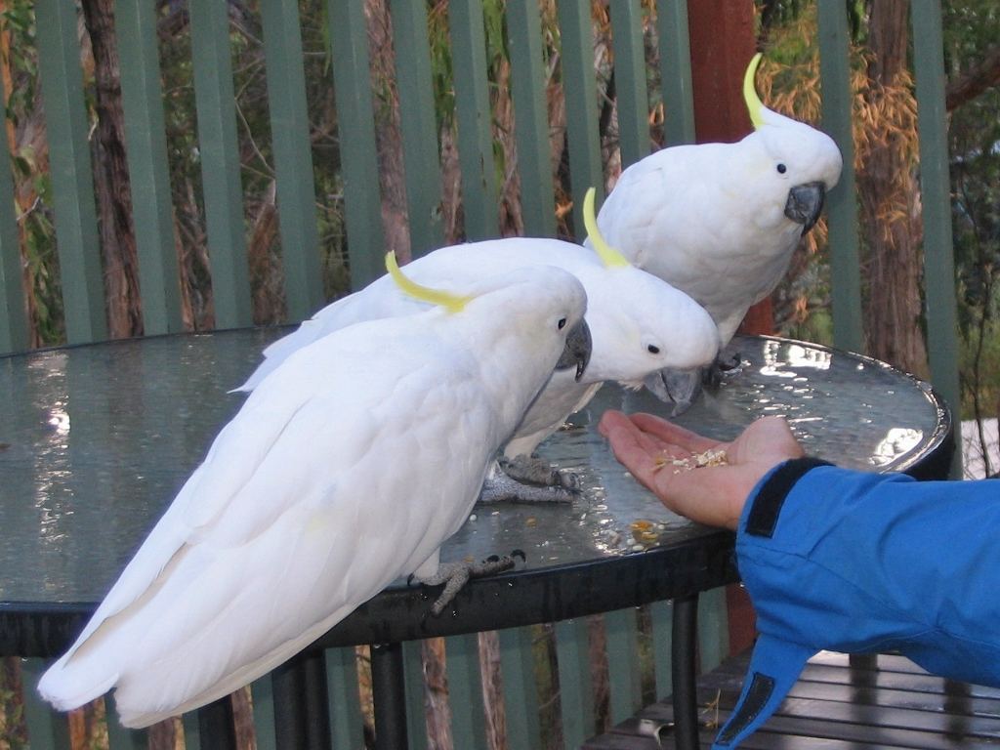

Factores que Definem o Preço
Quanto Custa uma Cacatua?
Se está a pesquisar o preço da cacatua em Portugal, o primeiro ponto a compreender é que não existe um valor único aplicável a todas as cacatuas. A designação "cacatua" abrange dezenas de espécies muito diferentes entre si — desde a pequena e popular cacatua-ninfa (a caturra) até às majestosas cacatuas-brancas, galah, goffin ou das molucas. Cada uma destas aves tem uma procura, uma raridade e um enquadramento legal distintos, o que faz com que o valor varie de forma significativa.
Por essa razão, na Paraíso de Aves trabalhamos sempre com um modelo de preço sob consulta. Esta abordagem não pretende esconder informação — é a única forma honesta e transparente de lidar com aves cujo valor depende de vários factores que se combinam de maneira única em cada exemplar. Uma cacatua jovem, criada à mão e plenamente socializada não pode ser comparada a uma ave adulta ou reprodutora, mesmo que pertençam à mesma espécie.
Ao longo deste guia vai perceber exactamente que elementos determinam o valor de uma cacatua, por que motivo algumas espécies são bastante mais dispendiosas do que outras, e que custos adicionais deve prever antes de tomar uma decisão. O objectivo é que chegue ao momento da consulta plenamente informado e consciente do compromisso de longo prazo que está a considerar assumir.
A Espécie É o Factor Principal
De todos os elementos que influenciam o preço, a espécie é, sem dúvida, o mais determinante. As cacatuas variam enormemente em tamanho, longevidade, raridade e exigência de cuidados, e tudo isso se reflecte no valor final.
Cacatua-ninfa (caturra)
Tecnicamente a mais pequena da família, a cacatua-ninfa é a mais comum e a mais acessível. É dócil, relativamente fácil de cuidar e ideal para quem se inicia no mundo dos psitacídeos. Por ser amplamente criada em cativeiro, situa-se no patamar mais baixo de valor entre as cacatuas.
Cacatua Galah (roseo)
De plumagem rosa e cinzenta, a galah é uma ave de porte médio, muito activa e sociável. A sua raridade e beleza colocam-na num patamar superior ao da ninfa. Pode conhecer melhor esta espécie na nossa ficha da cacatua galah.
Cacatua Goffin
Pequena mas extraordinariamente inteligente e curiosa, a goffin é reconhecida pela sua capacidade de resolver problemas. É uma espécie muito procurada, o que se reflecte no seu valor. Consulte a ficha completa da cacatua goffin.
Cacatua-branca e espécies de grande porte
As cacatuas-brancas, das molucas e outras espécies de crista amarela ou salmão são as mais imponentes e, geralmente, as mais dispendiosas. Exigem instalações de grandes dimensões, muita atenção e um enquadramento CITES mais restritivo. Veja a ficha da cacatua branca para mais detalhes.
Factores que Influenciam o Preço
Além da espécie, vários outros elementos determinam o valor de uma cacatua concreta. Quando nos contacta para uma cotação, é a combinação de todos estes factores que define o valor do exemplar disponível.
🦜 Espécie e Porte
Uma cacatua-ninfa e uma cacatua-branca situam-se em patamares completamente diferentes. Quanto maior, mais raro e mais longevo for o exemplar, maior tende a ser o valor.
🐣 Idade e Fase de Vida
Uma cria recém-desmamada, um juvenil independente ou um adulto têm valores distintos. Os exemplares jovens criados à mão são normalmente os mais procurados por serem mais fáceis de vincular.
❤️ Nível de Socialização
Uma cacatua habituada ao contacto humano, manuseada diariamente desde bebé e sem traumas, exige muitas horas de trabalho especializado que se reflectem no valor.
⭐ Raridade e Procura
Espécies pouco comuns no mercado legal europeu, ou com reprodução difícil em cativeiro, têm um valor superior devido à sua escassez e à elevada procura.
📄 Documentação CITES
A documentação legal — registo ou certificado CITES quando aplicável, anilha fechada e comprovativo de origem — está incluída. Uma ave sem documentação não é legal e nunca deve ser adquirida.
🩺 Estado de Saúde e Sexagem
Exames veterinários, certificado sanitário e sexagem por ADN garantem uma ave saudável e identificada. Este acompanhamento faz parte do valor final.
Nenhum destes factores existe isoladamente. É a conjugação de todos eles em torno de uma espécie concreta que define o valor real. Por isso indicamos sempre o preço sob consulta, adaptado ao exemplar e ao seu caso específico.
Porque Varia Tanto o Preço das Cacatuas?
Para compreender a variação de valores, é importante conhecer algumas particularidades desta família de aves. As cacatuas são psitacídeos originários da Austrália, Indonésia e ilhas do Pacífico, e caracterizam-se pela crista móvel, pela inteligência elevada e por um vínculo afectivo extremamente forte com quem cuida delas.
Muitas espécies de cacatua estão listadas nos apêndices da CITES — a convenção internacional que regula o comércio de espécies protegidas. Quanto mais restritivo for o estatuto de uma espécie, mais controlada e limitada é a sua transacção legal, o que naturalmente influencia o valor. Só exemplares provenientes de criadores registados, com documentação válida, podem ser legalmente transaccionados na União Europeia.
A isto acresce a exigência da criação em cativeiro. As cacatuas reproduzem-se lentamente e requerem instalações amplas, condições muito específicas e um acompanhamento cuidadoso. As crias criadas à mão implicam alimentação por papa, manuseamento diário e um desmame prolongado, um trabalho intensivo que se prolonga por meses. Toda esta cadeia — raridade da espécie, controlo legal e exigência de criação — explica por que motivo o valor de uma cacatua pode variar tanto de um exemplar para outro.
Custos Além do Preço de Compra
Adquirir uma cacatua é apenas o primeiro passo de um compromisso que pode durar várias décadas — algumas espécies vivem mais de 40 anos. Antes de avançar, é essencial que compreenda os custos recorrentes de manter esta ave, que são consideráveis.
Instalação e Habitat
As cacatuas necessitam de jaulas amplas e muito resistentes. Dado o seu bico poderoso e o hábito de roer tudo o que encontram, os materiais têm de ser robustos e seguros. Para as espécies de maior porte, o ideal é um aviário ou uma divisão dedicada. Este é um investimento inicial importante que deve ser previsto.
Alimentação
Uma dieta equilibrada, assente em pellets de qualidade, vegetais frescos, fruta e frutos secos em quantidade moderada, é fundamental para a saúde e longevidade da ave. Pode saber mais no nosso guia de alimentação para papagaios.
Saúde Veterinária
Consultas anuais com veterinário especializado em aves exóticas, análises e eventuais tratamentos representam um custo permanente. Recomendamos também a contratação de um seguro para aves exóticas.
Enriquecimento
As cacatuas são aves extremamente activas e destrutivas, que precisam de estimulação constante para evitar o tédio e problemas comportamentais como a arrancagem de penas. Brinquedos robustos, poleiros naturais e ramos para roer são consumíveis frequentes. Veja o nosso guia de brinquedos naturais para papagaios.
Documentação CITES e Legalidade em Portugal
Este é um ponto absolutamente inegociável. Muitas espécies de cacatua estão protegidas pela CITES e exigem documentação completa e válida. Em Portugal, a posse de uma cacatua protegida sem os documentos adequados pode constituir infracção ambiental, punível com coimas e apreensão da ave.
A documentação que deve acompanhar a ave inclui, consoante a espécie:
- Certificado ou registo CITES emitido pela autoridade competente (em Espanha, o MITERD; em Portugal, o ICNF)
- Anilha de identificação fechada com número de registo único
- Certificado veterinário de saúde
- Comprovativo de origem do criador registado
Todas as cacatuas da Paraíso de Aves são criadas no nosso estabelecimento registado em Llíria, Valência (Espanha). A documentação é 100% válida em toda a União Europeia, incluindo Portugal, e é entregue completa no momento da recepção da ave. Se um vendedor lhe oferece uma cacatua sem documentação ou a um valor "demasiado bom para ser verdade", desconfie — quase de certeza estará perante uma operação ilegal. Saiba mais na nossa página sobre documentação CITES em Portugal.
Como Obter uma Cotação Personalizada
Obter o preço actual de uma cacatua é simples e sem compromisso. Como a disponibilidade varia consoante a espécie e a época de criação, recomendamos contacto antecipado para garantir prioridade quando houver exemplares disponíveis.
- 1. Contacto inicial: Envie-nos um e-mail para paraisodeloros@gmail.com ou preencha o formulário desta página, indicando a espécie que procura.
- 2. Verificação de disponibilidade: Informamo-lo sobre os exemplares disponíveis, a sua idade e características.
- 3. Cotação detalhada: Apresentamos o valor do exemplar e um orçamento de transporte para o seu distrito.
- 4. Visita virtual ou presencial: Pode conhecer a ave por videochamada ou visitar-nos em Llíria.
- 5. Reserva e entrega: Após o sinal, preparamos a documentação, o check-up e o transporte seguro até Portugal.
Se pretende conhecer todas as cacatuas disponíveis, veja a nossa página de cacatuas à venda. Para comparar com outras espécies, consulte também o guia geral de quanto custa um papagaio em Portugal.
Por que Escolher a Paraíso de Aves?
+25 Anos de Experiência
Núcleo zoológico registado oficialmente, com décadas de criação responsável.
CITES Oficial
Toda a documentação legal incluída, válida em toda a UE.
Criadas à Mão
Cacatuas socializadas desde bebés para máxima confiança.
Entrega Segura
Envio certificado com seguro para todo Portugal.
Garantia Sanitária
Certificado veterinário e acompanhamento pós-venda.
Apoio Personalizado
Aconselhamento antes e depois da adopção.
Perguntas Frequentes sobre o Preço da Cacatua
Espécies Relacionadas
Quer Saber o Preço Actual da Cacatua?
Contacte-nos para uma cotação personalizada e sem compromisso. Indique a espécie que procura e a disponibilidade actual. Entregamos em todo Portugal continental, Madeira e Açores.
Solicitar Cotação Ver Aves Disponíveis